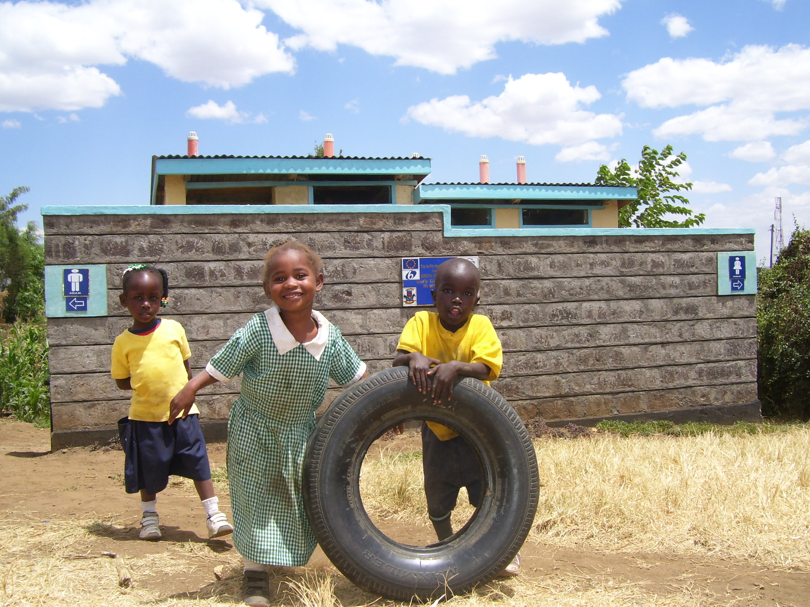

Nurturing potential through inclusive education, youth livelihood skills, and child protection in Narok County.

Safe, inclusive, nurturing environments.
Focused interventions designed to empower young lives and strengthen community resilience across Narok County.
 Education
Education
 Livelihoods
Livelihoods
Marketable vocational trades, financial literacy, and startup coaching.
Youth Hub → Wellbeing
Wellbeing
 Community
Community